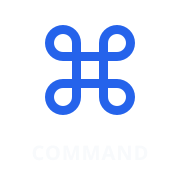
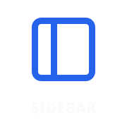
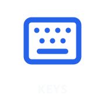
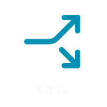

Codex Controller · Lucide / shadcn icon set
Commands page
New Chat · SquarePen
Quick Chat · MessagesSquare
Side Chat · MessageCirclePlus
Search Chats · Search
Open Folder · FolderOpen

Command Menu · Command
Review Panel · PanelRight
Terminal · SquareTerminal
Bottom Panel · PanelBottom

Sidebar · PanelLeft
Dictate · Mic

Shortcut Help · Keyboard
Agents page
Previous Agent · ArrowLeft
Next Agent · ArrowRight
Search Chats · Search
New Chat · SquarePen
Side Chat · MessageCirclePlus
Standalone · MessageSquareDashed

Fork · Split, 90° clockwise
Archive · Archive
Pin / Unpin · Pin
Copy Markdown · ClipboardCopy
Status · Activity
Handoff · Summary
Center wheel
Plan · Lightbulb
Reasoning · BrainCircuit
Fast · Zap
Small dials
Agents · Bot
Transcript · ScrollText
Font Size · Type
Reasoning · BrainCircuit
Tabs · PanelsTopLeft
LOUPEDECK
NATIVE
System Volume